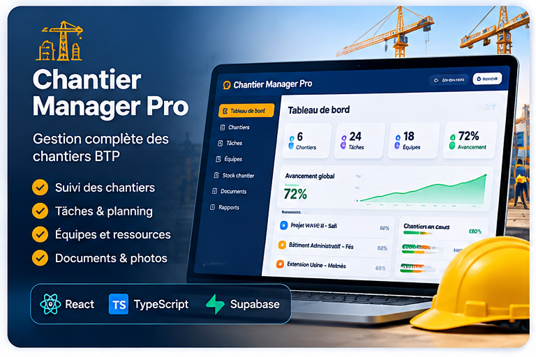
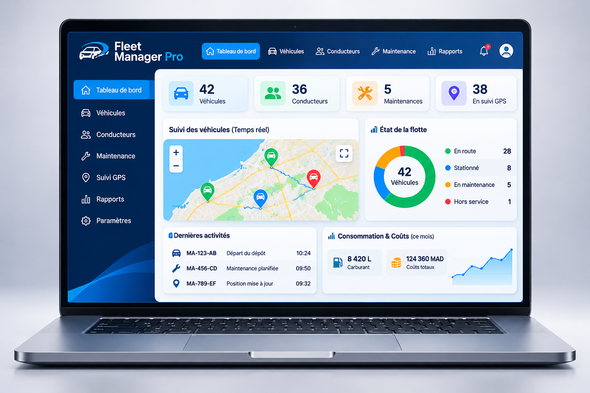

Solutions & démonstrations
Découvrez nos applications métier et sites web. Explorez les démonstrations avant de demander un devis personnalisé.
Demander un devis





Offres & accompagnement
Des solutions adaptées à votre activité
Site professionnel
Site vitrine, responsive, référencement de base
Sur devisApplication métier
Tableaux de bord, gestion et rapports
Sur devisSolution sur mesure
Fonctionnalités, intégrations et maintenance selon vos besoins
Sur devisNotre méthode
- Analyse des besoins
- Proposition et devis
- Prototype
- Développement
- Tests et validation
- Livraison et support
Questions fréquentes
Combien coûte un projet ?
Le prix dépend du périmètre et des fonctionnalités.
Quels sont les délais ?
Ils sont définis après analyse des besoins.
La maintenance est-elle obligatoire ?
Non, les modalités sont convenues dans le devis.
Conseils
Préparer votre cahier des charges
Listez vos utilisateurs, processus, données et objectifs avant de demander un devis.
Choisir une application métier
Identifiez les tâches répétitives et les indicateurs nécessaires avant de choisir une solution.
Confidentialité
Les demandes de contact servent à répondre à votre projet. Le formulaire existant utilise FormSubmit et WhatsApp ouvre un service externe. Les préférences de thème sont conservées localement. Pour toute question concernant vos données, contactez-nous.